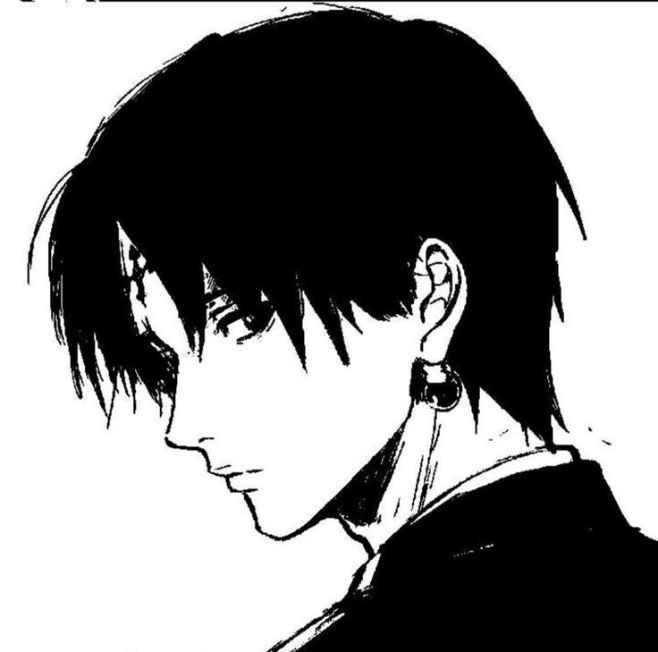
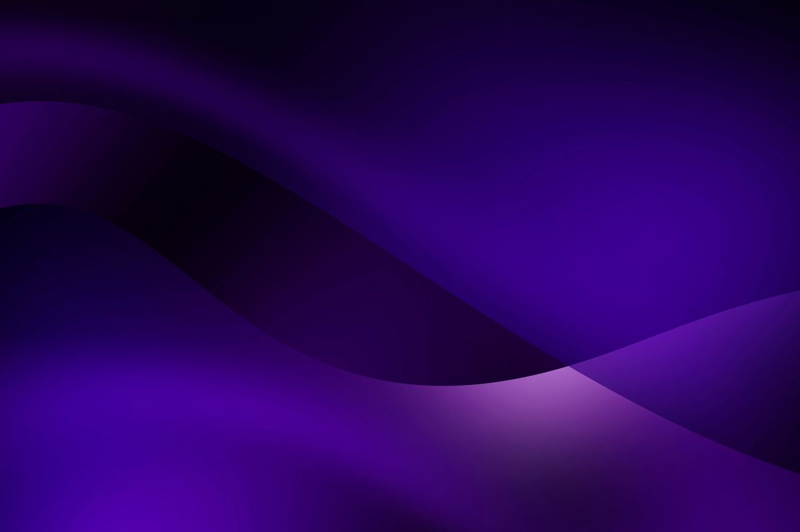
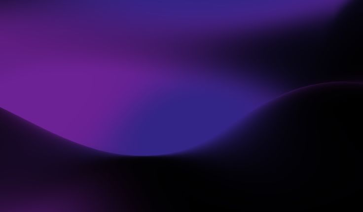
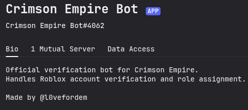
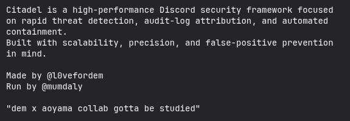

Personal Branding
Identity Site
A polished personal website focused on visual identity, first impressions, and premium presentation.
Portfolio
Creative Developer • Builder • Designer
I create projects with a premium visual feel — from portfolio experiences to Discord ecosystems like Crimson Verification and Citadel. Clean structure, cinematic glow, and strong presentation are the whole point.
Projects
Main Bots
Ideas

Personal Presence
Developer • Creator • Builder
About
I like building things that feel sharp, atmospheric, and memorable. My style leans toward premium structure, glow-heavy visuals, strong typography, and interfaces that look like they belong to a real brand.
I want the things I make to feel less like random pages and more like statements. Whether it’s a bot ecosystem, a community-facing site, or a personal portfolio, the goal is always the same: clean design, strong mood, and presence.
Projects
A few pieces that reflect how I like to build and present things.
Personal Branding
A polished personal website focused on visual identity, first impressions, and premium presentation.

Creative Coding
Interface ideas, motion concepts, and aesthetic builds made to improve overall design taste.

Frontend Development
Responsive layouts with attention to spacing, clarity, interaction, and a modern visual language.
Verification Bot
A cleaner, more structured way to handle community access and trust.
Crimson Verification Bot is built to make community access cleaner, safer, and more structured. It focuses on verification flow, server trust, and a smoother onboarding experience.
Verification-focused server flow
Cleaner and more trusted entry system
Designed to feel modern and reliable
Official Server
The official server behind the Crimson Verification ecosystem. Join to see the bot in action and connect with the community.

Project Highlight
Verification. Presence. Trust.
Anti Nuke Bot
Built for server protection, stability, and fast reaction when things go wrong.
Citadel is my anti nuke bot project, focused on protecting servers from destructive actions, strengthening security, and helping communities recover faster when something suspicious happens.
Anti nuke protection and fast defensive response
Built to secure communities and reduce damage quickly
Focused on trust, control, and server resilience
Official Server
The official server behind the Citadel protection ecosystem. Join to explore the bot, the community, and the overall security-focused environment.

Project Highlight
Protection. Control. Resilience.
Skills
Currently Building
Current Focus
Refining the verification flow, improving structure, and making the ecosystem feel cleaner and more trustworthy.
Security Direction
Pushing anti nuke protection further with stronger safeguards, better recovery logic, and a more polished system overall.
Design Language
Experimenting with premium UI, stronger visual identity, and layouts that feel more complete and memorable.
Contact
I’m not doing the formal email thing here. If you want to talk, collaborate, or just reach out, contact me via @l0vefordem.
Preferred Contact
@l0vefordem
Clean, direct, simple. That’s the best place to reach me.